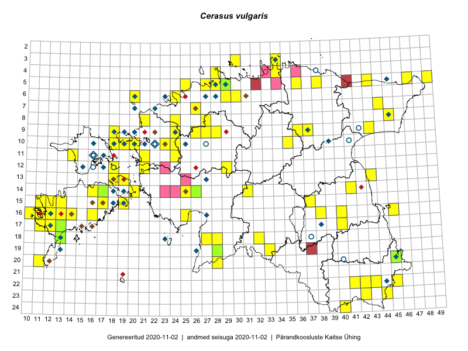

Cerasus vulgaris
Uuendatud: 2016-12-02
Kaardile koondatud taksonid: Cerasus vulgaris Mill.; Prunus cerasus L.

Kaart põhineb 95 vaatlusel. Taksonit on leitud 59 ruudust.
Kuvatud viited 20 esimesele andmebaasikirjele, ülejäänud PlutoFis
- Peedu Saar, Liina Oja: 2015-05-20: 18-27: ala
- Peedu Saar, Liina Oja: 2015-05-22: 18-27: GPS punkt
- Peedu Saar, Liina Oja: 2015-05-21: 16-25: ala
- Peedu Saar, Liina Oja: 2015-05-21: 16-25: GPS punkt
- Peedu Saar, Liina Oja: 2015-05-20: 18-28: ala
- Peedu Saar, Liina Oja: 2015-05-20: 18-28: GPS punkt
- Peedu Saar, Toomas Kukk: 2015-05-26: 10-24: ala
- Tiit Hallikma, Indrek Tammekänd, Toomas Kukk: 2015-06-09: 12-29: ala
- Tiit Hallikma, Indrek Tammekänd, Toomas Kukk: 2015-06-09: 12-29: GPS punkt
- Peedu Saar, Liina Oja: 2015-07-22: 08-45: GPS punkt
- Peedu Saar, Liina Oja: 2015-06-10: 14-31: GPS punkt
- Tiit Hallikma, Toomas Kukk: 2015-07-22: 05-49: ala
- Tiit Hallikma, Toomas Kukk: 2015-07-22: 05-49: GPS punkt
- Peedu Saar, Liina Oja: 2015-06-10: 14-31: ala
- Peedu Saar, Liina Oja: 2015-07-22: 08-45: ala
- Toomas Kukk, Tiit Hallikma: 2015-06-01: 08-45: ala
- Toomas Kukk, Peedu Saar: 2015-05-26: 10-24: GPS punkt
- Toomas Kukk, Mari Reitalu: 2014-06-20: 16-12: ala
- Rein Kalamees, Kersti Püssa: 2015-05-29: 05-38: GPS punkt
- Tiit Hallikma, Toomas Kukk: 2015-07-22: 05-47: ala